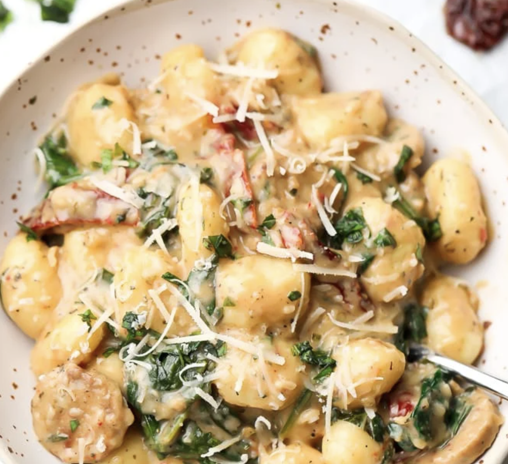

One Pan Tuscan Gnocchi

Description:
One pan Tuscan Vegan Gnocchi features pillowy soft gnocchi, a flavorful creamy sauce, garlic, vegan sausage, fresh spinach and sun dried tomatoes. A fancy dinner ready in 20 minutes!
Ingredients:
- 2 tablespoons olive oil
- 2 vegan Italian sausages (7-8 ounces), sliced
- 4 cloves garlic, minced
- 1/2 cup vegetable broth
- 13.5 ounce can full fat coconut milk
- 2 teaspoons fresh lemon juice
- 1 teaspoon dried Italian seasoning
- 1/3 cup sun dried tomatoes, sliced if whole
- 1 pound uncooked gnocchi (the dry packaged kind)
- salt + pepper, to taste
- 2 cups loosely packed baby spinach
- 1/2 cup Vegan Parmesan, + more for garnish, optional
- 1/4 cup chopped fresh basil
Steps:
- In a large skillet, sauté the vegan sausage in the olive oil over medium-high heat for about 5 minutes, until browned.
- Add the garlic and cook, stirring constantly, for 30 seconds until fragrant.
- Pour in the vegetable broth, coconut milk, lemon juice, Italian seasoning, sun-dried tomatoes and gnocchi. Give everything a good stir.
- Bring to a boil, then lower heat to medium and cook, uncovered for 5 minutes, stirring occasionally.
- Add salt + pepper to taste, and stir in the spinach. Cook for another 2 minutes, until the spinach has wilted.
- If using, stir in the vegan parmesan. At this point, the gnocchi should be cooked through but not mushy, and the sauce thickened somewhat. Cook an additional minute or two if necessary.
- Serve immediately garnished with vegan parmesan and fresh basil. Enjoy immediately for best results. Leftovers will keep in the refrigerator for 3-4 days. Add a little extra broth or water when re-heating, as the sauce will thicken as it cools. It can be frozen if needed.